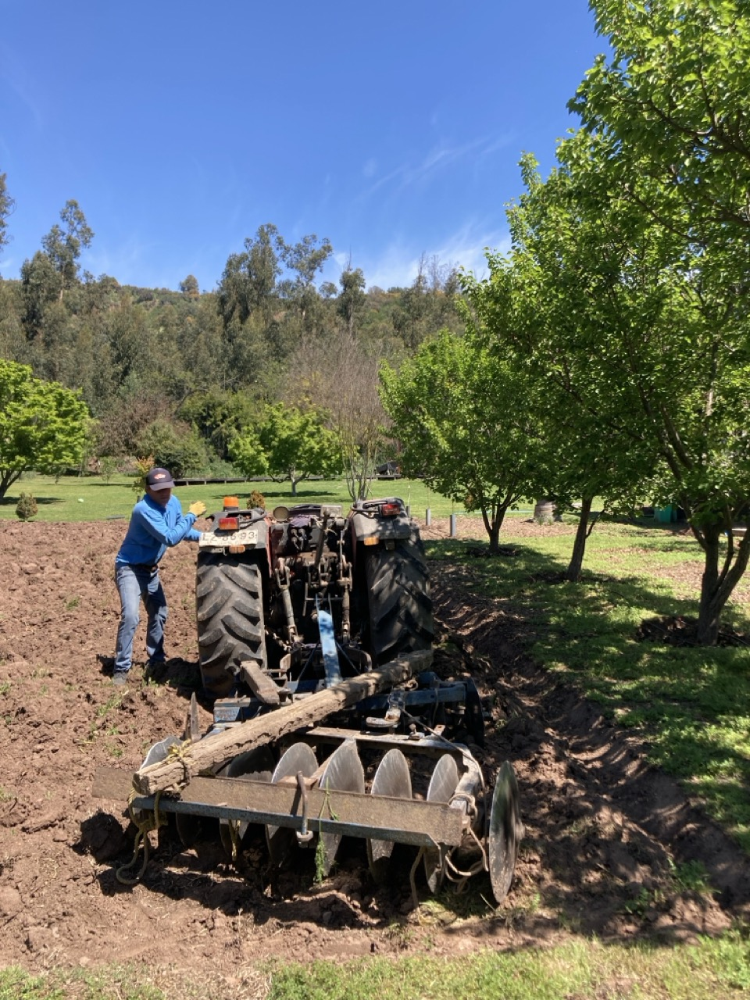
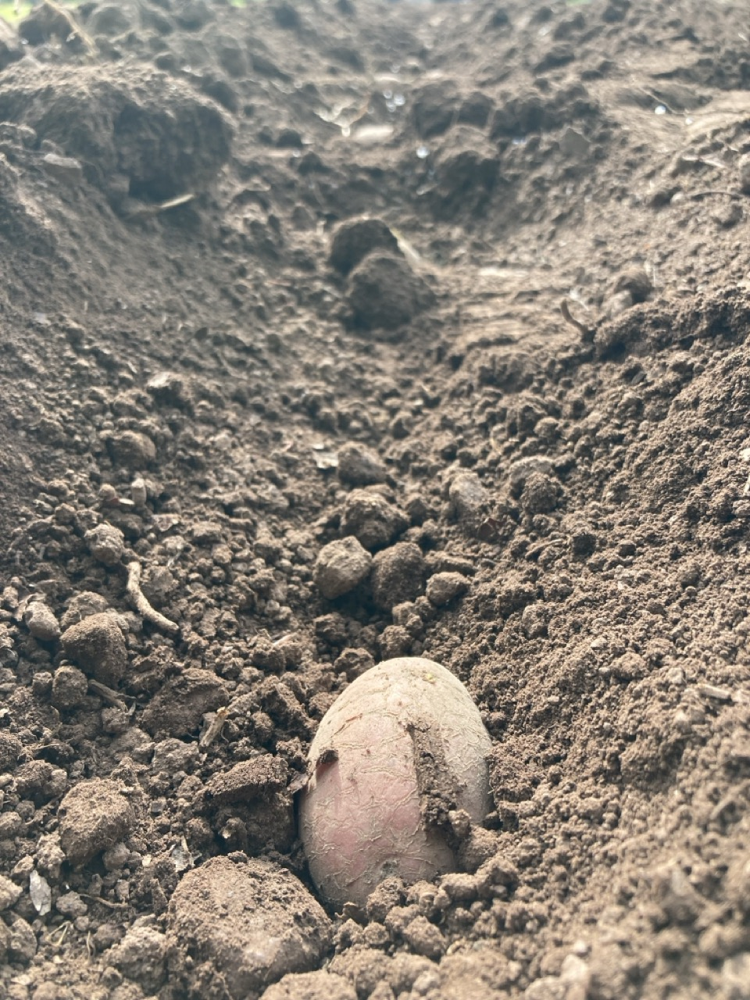

Papa Desirée
Producido por El Otro Huerto, Paine.
Trayectoria Inmutable del Lote
Preparación de Terreno
Limpieza y oxigenación del suelo en el sector de Paine. Enriquecimiento con materia orgánica local.

Siembra Seleccionada
Incorporación de semilla Desirée certificada. Registro de densidades de siembra en Blockchain.

Geolocalización Paine
Validación del polígono productivo en El Otro Huerto, Paine, Región Metropolitana.
Cosecha Finalizada
Recolección manual garantizando integridad. Lote sellado digitalmente en Polygon.

¿Quieres esta tecnología?
Lleva la trazabilidad inmutable de AndesChain a tu propia marca.
AGENDAR REUNIÓN